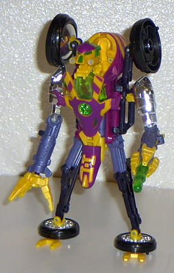

Thrust
Thrust
Allegiance
: Vehicon
Size
: Deluxe
Difficulty of Transformation
: Easy
Color Scheme
: Chrome silver, yellow,
fuchsia, transparent green, black, blue-gray, and some sparkly gold-yellow
Similarity to counterpart
: !!
Rating
: 7.0
Vehicle mode is a motorcycle.
This mode is VERY cool, and it looks almost exactly like Thrust's vehicle
mode on the show, if you ignore the middle parts of the arm-engines and
replace some of the yellow with fuchsia. The detailing, while not exceptional,
is still pretty good. There is a neat little action feature in this mode;
if you move Thrust forward on his wheels, his vehicle head moves back and
forth a little, like he's searching for Maximals! Very nice, but it moves
a little too fast at a regular speed, and it makes it look like Thrust
is on a sugar binge. I have two major problems with this mode, despite
all the positives; for one, Thrust's robot head is clearly visible behind
the vehicle head, and kinda makes it looks like Thrust is laying down in
his robot mode. Secondly, the arm-engines are too large in proportion to
the vehicle body. It would have been better if Hasbro had made the arm-engines
more spherical and shorter in the middle, like the show version; this way,
they would have looked proportional in both modes. It's also pretty hard
to get the arm-engines to pose exactly straight, and it makes them look
as if they're bent a little. Another, less minor, problem I have is that
since there is only one arm-engine that can shoot a missle, there is only
one missile/exhaust flame in the arm-engines in this mode, and it makes
Thrust look a little uneven. The spark orb is located in the middle of
Thrust's vehicle head, it's difficult to miss. (NOTE: The "attack mode"
featured on the back of the box is just rotating Thrust's arm-engines forward
so that they can fire. Some "mode".)
There are three different
variants of the robot mode: There is the "Hasbro" robot mode (the one with
the feet), the "Tri-Wheel" robot mode (the one with three wheels holding
Thrust up, obviously), and the "show-accurate" robot mode (the only one
not explained on the package). I'll discuss the positives and negatives
of the modes individually, then move on to the features common in all three.

Thrust's "Hasbro" mode
is the only one with feet, but I think it's also the stupidest-looking.
The feet are very poor; they are obviously made from the front wheel halves,
and look pretty fat and odd. They also aren't locked in place, and they
continually spin around.The back wheel halves are also a major extra in
this mode, and could easily have been made to rotate back behind Thrust,
but nooo, that would have required more WORK, wouldn't it Hasbro? Also,
the vehicle head on the chest looks just plan weird.
Thrust's "Tri-Wheel"
mode is made by snapping Thrust's two feet-halves back together, rotating
the leg up a little, and then lowering the two back-wheel halves as much
as possible, rotating the halves inward as well. This mode is better than
the "Hasbro" mode, in my opinion. He can stand easier. However, it makes
him look like he's handicapped (no offense to any handicapped people reading
this, it's just not what you want a transformer to look like). Unfortunately,
the vehicle head is still present on the chest, and the panels that hold
the arms can't fold all the way back into the body. This mode does get
rid of the big wheel half extras on Thrust's back, though.
The third and final
mode, the "show-accurate" mode, is my favorite. From the "Tri-Wheel" mode,
you bring the wheels and put them in the same place they were in the "Hasbro"
mode, but you leave the bottom wheel connected. You also take off the vehicle
head on the chest, to reveal a flatter, more show-accurate chest. This
mode has the uni-wheel feet that Thrust has on the show, but because of
this, he can't stand up by himself in this mode. This mode also makes Thrust
look more like a hunchback because of the removed chest-head, and the large
wheel extras on the back are there again. The final problem with this mode
is that there isn't any place to store Thrust's vehicle head when you take
it off, so you have to be careful not to lose it. The foot-wheel could
also be a little bigger.
Now, onto the pros and
cons positive to all three modes. The arms have a very unique concept,
one cool in the robot mode but odd-looking in the vehicle mode; having
each arm fire a different weapon. The right arm can extend a little bit,
sort of like a short grappling hook, and the claws come out as they extend.
The left arm can fire a missle. One big problem I have for the three robot
modes is the face; it's not show-accurate. There isn't any yellow or green
on the face on the show, only fuchsia and red. Thrust also has a
Tankorr
-style
mouth on the toy. It makes Thrust look like just another dumb berserker
general, and not the cool guy he is on the show. Because of this mouth,
the "show mouth" is the nose on the toy, and this makes Thrust look all
the more dopey. The front-wheel cover also sticks out between Thrust's
legs, and looks odd as well. (Don't be fooled by all the negatives I'm
attaching to this robot mode- it's actually a fairly cool mode, it's just
that as a toy reviewer, I focus on the negatives.)
A great vehicle mode,
and an okay robot mode, this is an overall nice toy, although, like a lot
of Beast Machines toys, Hasbro could have made it better and more show-accurate.
Review by Beastbot